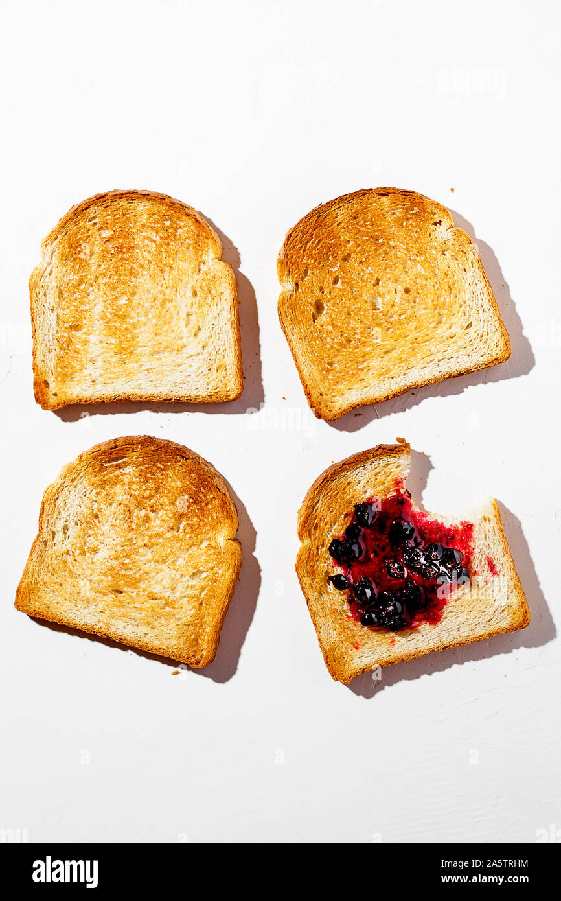

Toast

Description
Often overlooked, toasted bread has long been a staple of the North American diet, and for good reason.
Simple toast, which is an excellent source of carbohydrates, can be customized in many ways.
Ingredients
- Bread (of choice, there are many styles)
- Spread of some type (Butter, Jam, Nutella, Speculoos, etc.)
Steps
- Place Bread in toaster.
- Cook until desired level of doneness
- Optional: Add some type of spread.